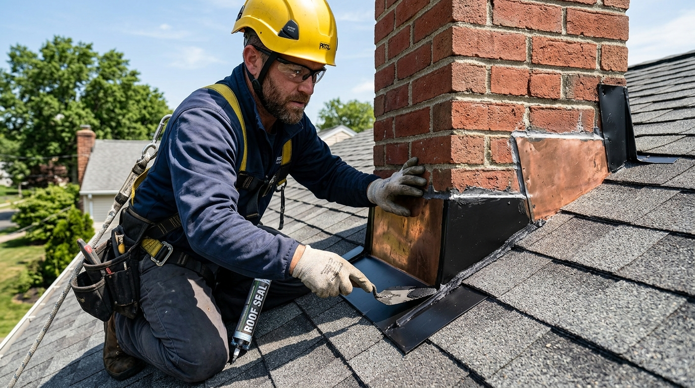
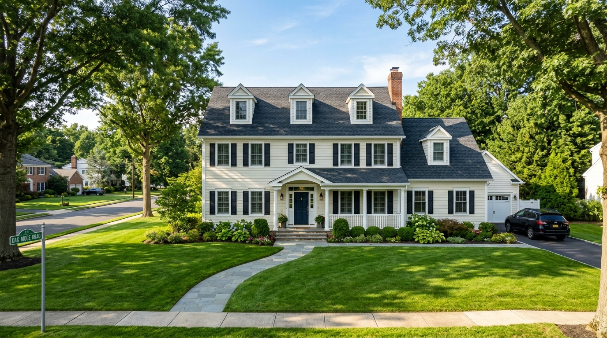
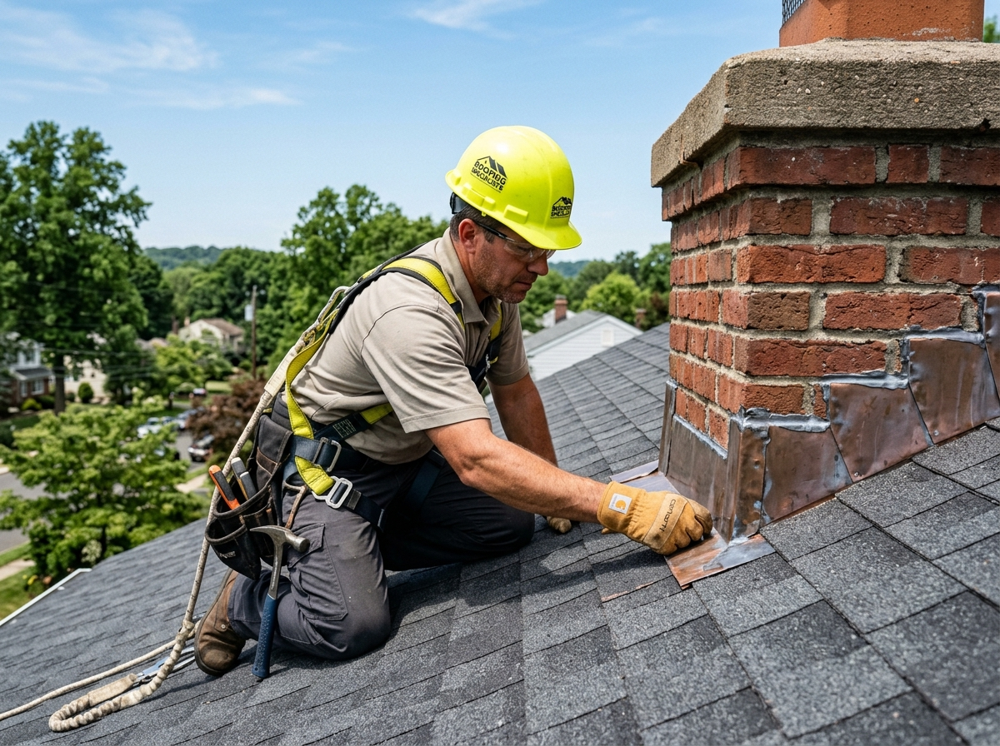

Roof Repair in Bridgewater, NJ
Need help with a damaged or leaking roof? Bridgewater Roofer provides precision roof repair services for homes and commercial properties throughout Bridgewater Township and surrounding Somerset County communities. From wind-blown shingles to persistent chimney leaks, our certified technicians stop water intrusion at the source.

Roof leaking or visibly damaged?
Roof damage can worsen rapidly when water continues entering the roofing system, saturating insulation and rotting structural sheathing.
Professional Roof Repair for Bridgewater Properties
A compromised roof does not always require an expensive total replacement. When addressed promptly, targeted roof repairs restore the water barrier, preserve structural sheathing, and extend the functional lifespan of your architectural shingle, flat membrane, or metal roof by years.
Whether your home sustained sudden storm damage along the Watchung ridge, developed an active leak around a chimney, or suffered wind-lifted shingle tabs during severe weather, Bridgewater Roofer provides diagnostic precision and permanent repairs. We evaluate the entire roofing assembly—including ice and water shields, underlayment, step flashing, and ventilation—to ensure no hidden moisture path is overlooked.
We serve both residential homeowners and commercial facility managers across Bridgewater, Martinsville, Green Knoll, and neighboring Somerset County communities with honest assessments and dependable craftsmanship.

Common Reasons You May Need Roof Repair
Roof issues in Central New Jersey rarely stay isolated. Unaddressed water intrusion migrates along rafters, damages attic insulation, and causes interior ceiling staining. Here are the primary conditions our field crews repair:
Leaking Roof
Active drips, damp attic rafters, or ceiling discoloration during rainfall indicate an unsealed penetration, blown shingle, or failed valley transition requiring swift containment.
Missing Shingles
High wind gusts detach aged or improperly nailed shingle tabs, leaving the underlying felt paper and plywood decking exposed directly to precipitation and UV degradation.
Damaged Flashing
Cracked, rusted, or unseated metal flashing around chimneys, dormers, and sidewalls is responsible for over 70% of persistent residential roof leaks in Somerset County.
Storm Damage
Nor'easters and summer thunder squalls dislodge ridge caps, crease shingle bodies, and cause tree limb impacts that require emergency tarping and structural repairs.
Cracked Pipe Boots
Neoprene rubber collar seals around plumbing vent stacks dry rot and crack under New Jersey seasonal UV rays, allowing water to trickle directly down interior plumbing chases.
Roof Valley Issues
Valleys carry the highest volume of runoff on your roof. Buckled metal linings, trapped wet debris, or misdirected fasteners cause rapid valley failure and leaks.
Loose Ridge Caps
Ridge and hip caps sit at the highest wind-load plane of the roof. Thermal expansion can loosen fastener anchors, allowing wind-driven rain to infiltrate the ridge vent line.
Localized Water Damage
Saturated eave sheathing from winter ice damming or blocked gutters can rot fascia boards and rafter tails, requiring surgical wood replacement and resealing.
Where Roofing Problems Commonly Develop
Click on common roof problem areas below or select a symptom to explore how vulnerabilities develop and how our technicians resolve them.

Active Water Dripping or Inflow
Active leaks during rainstorms require immediate emergency tarping or targeted leak mitigation to prevent ceiling collapse, ruined attic insulation, and structural framing rot.
Signs It May Be Time for Roof Repair
Catching roof vulnerabilities before they turn into full interior floods is crucial. Inspect your home or commercial building for these common early warning indicators:
Water Stains on Ceilings or Walls
Yellow, brown, or bubbling moisture rings on interior sheetrock indicate water is pooling above the ceiling plane from an active roof penetration.
Excessive Granules in Gutters
Coarse mineral granules accumulating in gutter troughs mean asphalt shingles are losing protective UV armor and becoming vulnerable to cracking.
Curled, Cracked, or Cupping Shingles
Thermal cycling and sun exposure cause brittle shingles to curl upward at the edges, breaking the wind-seal strip and exposing fastener nails.
Visible Flashing Gaps or Rust
Separated step flashing along sidewalls or corroded apron flashing around brick chimneys allows water to seep directly behind siding and roof decking.
Daylight Visible Through Attic Roof Boards
Seeing points of daylight when standing in an unlit attic indicates punctured decking, displaced shingles, or deteriorated roof vent seals.
Moss or Dark Algae Patches
Dense moss growth holds moisture against shingle granules, especially on shaded north-facing roof slopes in heavily wooded Bridgewater neighborhoods.
Damp or Moldy Attic Insulation
Musty odors or compacted, discolored fiberglass insulation indicate chronic slow condensation or pinhole leaks above the ceiling rafters.
Recent Severe Storm or Wind Gusts
High wind gusts across the Raritan Valley frequently crease shingle tabs or tear off ridge cap pieces without leaving immediately obvious interior puddles.
Roof Repair for Bridgewater, NJ Homes & Businesses
Roofs in Bridgewater Township experience significant weather extremes throughout the four seasons. Properties situated along the First Watchung Mountain ridge endure intense wind exposure, while homes in the valley near the Raritan River face elevated summer humidity and dense shade from mature oak and maple tree canopies.
In winter, rapid freeze-thaw cycles create ice dams along eaves, forcing meltwater backward under shingle courses if ice and water barriers are compromised. Summer brings heavy thunderstorms and torrential downpours that test valley flashing and chimney counter-flashing to their limits.
Our technicians understand the specific construction styles common across Somerset County—from classic 1970s and 1980s suburban colonials to modern custom builds—and specify repair materials designed to withstand local New Jersey climate conditions.

Our Roof Repair Process
We follow a rigorous 8-step quality protocol for every repair project, ensuring your roof is thoroughly inspected, properly repaired, and cleanly swept.
Initial Conversation
We listen to your observations, review leak timing, and confirm property details to dispatch the right specialist.
Roof Assessment
Our technician climbs the roof to inspect shingle integrity, flashing seams, valleys, and vent boots up close.
Identify Problem Areas
We trace moisture paths to find the exact point of entry, distinguishing surface damage from decking rot.
Explain Findings
We share clear digital photos taken on the roof and walk you through what is happening in plain English.
Recommend Repair
We provide a clear written estimate specifying materials, labor scope, and repair strategy without pressure.
Complete Repair
We install matching shingles, replace compromised flashing, and seal penetrations according to manufacturer specifications.
Thorough Cleanup
We run magnetic sweeps across lawns, flowerbeds, and driveways to ensure zero hazardous roofing nails are left behind.
Final Review
We perform a final water-shedding review, document the finished work with photos, and hand over your warranty.
Types of Roof Repairs We Handle
Every roofing component has unique installation requirements. Explore the specific repair solutions our factory-trained crews execute:
Shingle Repair
Replacement of cracked, curling, or wind-blown asphalt shingles with color-matched dimensional materials, including new seal strips and blind nailing.
Explore Shingle Services →Flashing Repair
Precision fabrication and installation of corrosion-resistant aluminum and copper step flashing, counter-flashing, and chimney aprons.
Flashing Details →Leak Repair
Targeted moisture detection tracing active drips, water stains, and ceiling dampness back to their structural entry point for permanent sealing.
Roof Leak Repair →Roof Vent Repair
Replacement and re-flashing of static box vents, ridge vents, powered attic ventilators, and exhaust fan hoods to stop water infiltration.
Vent Repair Options →Pipe Boot Repair
Installation of heavy-duty silicone and EPDM plumbing vent boot collars that resist dry-rot, cracking, and freeze-thaw separation.
Pipe Boot Services →Storm Damage Repair
Comprehensive restoration for roofs impacted by high wind gusts, fallen branches, nor'easter downpours, or hail impacts across Central NJ.
Storm Damage Details →Roof Valley Repair
Re-lining high-volume runoff valleys with heavy ice and water shield and durable valley metal to prevent catastrophic runoff penetration.
Valley Repair Services →Emergency Temporary Protection
Rapid-dispatch emergency tarping and temporary watertight securing to safeguard interiors until weather permits permanent repair.
Emergency Roofing →Roofing Systems We Repair
Our experienced roofing technicians are trained across all major residential and commercial roofing systems common to Central New Jersey.
Architectural Asphalt Shingles
The gold standard for Somerset County residential roofs. Architectural dimensional shingles feature multi-layered fiberglass construction, excellent wind resistance up to 130 mph, and rich shadow lines that elevate suburban curb appeal.
- Blown-off tabs & wind-creased shingle tab replacements
- Granule scouring & UV fiberglass deterioration repairs
- Valley transition, step flashing & pipe collar resealing

Roof Repair or Roof Replacement?
The right decision depends on the extent of damage, the age of your roofing system, decking condition, and whether issues are isolated or systemic. We provide an honest recommendation based on your roof's true condition.
Roof Repair May Be Appropriate When:
- ✔ The roof is under 15–18 years old and shingles retain good granule coverage.
- ✔ Damage is localized to a single area (e.g., one fallen branch or a loose chimney flashing).
- ✔ Underlying plywood decking remains solid and dry across the surrounding planes.
- ✔ A single pipe boot or skylight seal has dried out but shingles around it are healthy.
Replacement May Be Considered When:
- ✔ The roofing system exceeds 20–25 years of age with widespread brittleness.
- ✔ Widespread granule loss leaves fiberglass matting exposed across multiple roof slopes.
- ✔ You experience repeated leaks in multiple unrelated rooms after moderate rain.
- ✔ Extensive structural decking rot is present beneath multiple deteriorated valleys.
What Affects the Cost of Roof Repair?
Because every roof structure, slope, and water entry point is unique, accurate pricing requires a physical inspection. Here are the genuine technical factors that influence repair estimates:
Extent and Location of Damage
Replacing three blown-off shingles on an easily reachable lower porch slope requires significantly less labor and staging than repairing a steep rear valley leak.
Roofing Material & Match
Standard architectural asphalt shingles are readily available and economical, whereas specialized standing seam metal, slate, or designer shingles require custom fabrication.
Roof Pitch & Steepness
Steep slope roofs (8/12 pitch and greater) require specialized OSHA-compliant safety harnesses, toe boards, and anchor points, which naturally adjust labor staging time.
Building Height & Accessibility
Two- and three-story properties or homes with steep terrain, conservatory additions, or delicate landscape beds require additional ladder staging and protection measures.
Underlying Decking Condition
If water has seeped unnoticed beneath shingles and rotted the plywood or tongue-and-groove sheathing, compromised wood sheets must be cut out and replaced.
Flashing Complexity
Chimneys, skylights, dormers, and masonry transitions require custom-bent step and counter-flashing embedded into mortar joints, requiring masonry skills.
Number of Penetrations
Roofs with multiple pipe vents, attic fans, exhaust flues, and skylights require individual watertight perimeter flashing kits and sealing membranes.
Emergency Dispatch Timing
Immediate 24/7 emergency leak tarping during severe nor'easters or high wind storms involves rapid truck dispatch and specialized temporary sealing materials.
Bridgewater Roofing Requirements
Permit requirements in New Jersey depend on the scope of roofing work performed. Under the New Jersey Uniform Construction Code (UCC), minor non-structural repairs—such as replacing damaged shingles, fixing small sections of flashing, or patching a pipe boot—are generally classified as ordinary maintenance and do not require municipal permits.
However, when roofing work involves structural decking changes, major re-roofing, or commercial assemblies, permit filing with Bridgewater Township's Code Enforcement Department (located at 505 Route 202/206) is required. We assist homeowners in determining exact compliance requirements and manage all necessary permit filings directly.

Recent Roof Repair Projects
Explore authentic roof restoration work completed by our crew on residential properties in Bridgewater and neighboring Somerset County communities.

Ridge Shingle & Valley Leak Repair
High winds dislodged 15 feet of ridge cap shingles and tore valley underlayment, allowing rainwater into the upper attic. Our crew removed damaged sections, installed new ice and water membrane, and color-matched architectural shingles.

Chimney Counter-Flashing Restoration
Old tar patchwork around a brick masonry chimney had cracked, sending water down the living room fireplace wall. Our technician ground out mortar joints, cut and bent new custom counter-flashing, and repointed with polyurethane sealant.
Interactive Before & After Comparison
Drag the slider handle or use arrow keys to inspect the repair transformation.
 Before (24-Yr Aged Roof)
Before (24-Yr Aged Roof)
 After (New Architectural Shingles)
After (New Architectural Shingles)
Why Choose Bridgewater Roofer for Roof Repair?
We build lasting customer relationships across Somerset County through honest technical evaluations, careful property protection, and permanent repair solutions.
Clear, Direct Communication
You speak directly with local roofing professionals. We explain findings with photos, provide transparent scopes, and never use high-pressure tactics.
Detailed On-Roof Assessment
We physically walk and inspect your roof slopes, flashing aprons, and penetrations instead of relying merely on ground-level guesswork.
Repair-First Philosophy
If a reliable, long-lasting repair can safely restore your roof's water barrier, we will never try to push an unnecessary whole-roof replacement.
Multi-Material Technical Skill
Our installers are certified to service asphalt architectural shingles, standing seam metal, flat commercial membranes (TPO/EPDM), and cedar shakes.
Property & Landscape Shielding
We cover siding, delicate shrubbery, flower beds, and decks with heavy protective tarps before beginning repair operations.
Magnetic Nail Sweep Cleanup
Every repair includes a dual-pass industrial magnetic sweep around gutters, driveways, and lawns to ensure total family and pet safety.
What Customers Say About Our Roofing Work
Read authentic feedback from Bridgewater and Somerset County property owners who entrusted us with their roof repair needs:
Related Roofing Services
Explore other specialized roofing services we deliver across Bridgewater Township:


Roof Repair Around Bridgewater & Somerset County
Our local service fleet provides rapid roof repair response across Bridgewater and neighboring towns throughout Somerset County:
Bridgewater, NJ
Suburban colonials, complex valleys & multi-gable flashing repairs
Somerville, NJ
Historic Victorian roofs, steep pitch & chimney counter-flashing
Raritan, NJ
Residential asphalt shingles & commercial flat membrane repairs
Martinsville, NJ
High-wind ridge shingles & heavily shaded roof moss mitigation
Bound Brook, NJ
River valley humidity sealing, pipe collar boots & gutter aprons
Basking Ridge, NJ
Designer architectural shingles, shake conversions & valley sealing
Warren, NJ
Custom steep-slope homes, copper valley lining & skylight flashing
Bedminster, NJ
Country estates, standing seam metal & ice dam preventative repairs
Branchburg, NJ
Contemporary ranches, wind damage tab restoration & attic vents
Hillsborough, NJ
Suburban developments, ridge cap blow-off repairs & soffit seals
Manville, NJ
Classic bungalows & colonials, flashing leaks & shingle patches
Roof Repair FAQs
Find straightforward, expert answers to questions homeowners ask when facing roof problems in Bridgewater, NJ.
How do I know if my roof can be repaired instead of replaced?
If damage is isolated to a specific area (such as a blown shingle, loose pipe collar, or compromised chimney step flashing), and the majority of your shingles remain pliable with good granule adhesion, a targeted repair is usually appropriate. If your roof is over 20 years old and showing systemic curling or widespread leaks across multiple slopes, a replacement is typically the more cost-effective long-term path.
Can a leaking roof be repaired without replacing the whole roof?
Yes, absolutely. The vast majority of roof leaks originate from specific penetration points—such as chimney counter-flashing, valley intersections, plumbing vent boots, or skylight perimeters. By removing localized shingles, installing high-temperature ice and water underlayment, and securing new metal flashing, we seal leaks permanently without disturbing the rest of the roof plane.
How quickly should roof leaks be repaired?
Immediately. Water entering the roofing envelope travels along rafters, saturating fiberglass insulation (which permanently loses its R-value) and soaking plywood decking. Left unaddressed for even a few weeks during humid New Jersey summers, moisture breeds toxic wood-decay fungi and black mold, turning a minor repair into an expensive structural project.
Can missing shingles cause leaks inside the house?
Yes. When a shingle blows off in a storm, the underlying asphalt felt or synthetic underlayment is exposed directly to wind and sunlight. Standard underlayment is water-resistant, not waterproof; UV exposure and driving rain will break through it within days, allowing water into the nail penetrations and directly through the plywood sheathing.
Do you repair roof flashing around chimneys and valleys?
Yes, precision flashing repair is one of our primary specialties. We custom-fabricate aluminum and copper step flashing, headwall flashing, and chimney counter-flashing, cutting into mortar joints to create a mechanical barrier that does not rely solely on temporary roofing caulk.
Can storm damage from wind or hail be repaired?
Yes. We repair storm-impacted roofs across Somerset County, replacing lifted shingle tabs, fractured ridge vents, and bruised shingles. We also provide thorough photo documentation that homeowners can use when filing insurance claims with their carriers.
How much does roof repair typically cost in Bridgewater?
Because every repair project differs based on roof slope, height, accessibility, underlying decking condition, and materials required, honest roofers do not quote fixed prices without an inspection. We provide completely transparent written estimates after a physical inspection of your roof structure.
How long does a typical roof repair take to complete?
Most targeted residential roof repairs (such as replacing damaged shingles, fixing a leaking pipe boot, or rebuilding chimney flashing) are completed within 2 to 5 hours on the day of service. More complex repairs involving rotted structural decking replacement or extensive valley work may take a full working day.
Do roof repairs require permits in Bridgewater Township?
Under New Jersey UCC rules, isolated repairs and ordinary maintenance do not typically require a construction permit. However, full roof replacements and structural modifications do require permits from the Bridgewater Township Code Enforcement office. We handle all necessary permit filings on projects that require them.
When does roof repair stop making economic sense?
When a roof reaches 80% or more of its manufacturer lifespan, shingles become brittle, and granule loss is widespread. If you find yourself scheduling repairs every 6–12 months in different locations, continuing to patch the roof becomes a sunk cost. In that scenario, investing in a full replacement with a new warranty is the wiser financial decision.
Helpful Roof Repair Resources
Learn more about maintaining your roofing system and preventing moisture intrusion with our local guides:

What Causes Roof Leaks in New Jersey?
Discover the primary culprits behind water leaks in Central NJ homes, from pipe collar failure to freeze-thaw expansion.
Read Full Guide →
Roof Repair vs Replacement: How to Decide
A clear technical framework to help homeowners evaluate whether patching or replacing makes more financial sense.
Read Decision Guide →
What to Check on Your Roof After an NJ Storm
Step-by-step homeowner checklist for spotting wind lift, hail bruising, and gutter overflow after severe weather.
Read Storm Checklist →Need Roof Repair in Bridgewater?
Tell us what's happening with your roof and speak directly with a local roofing professional about the next step. Our field crews are on standby for both emergency leak tarping and scheduled on-site repair evaluations.